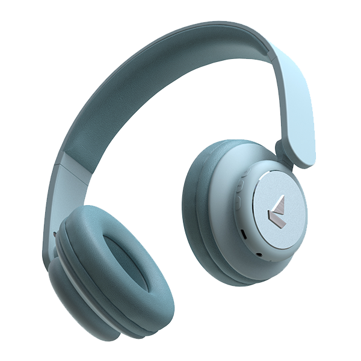
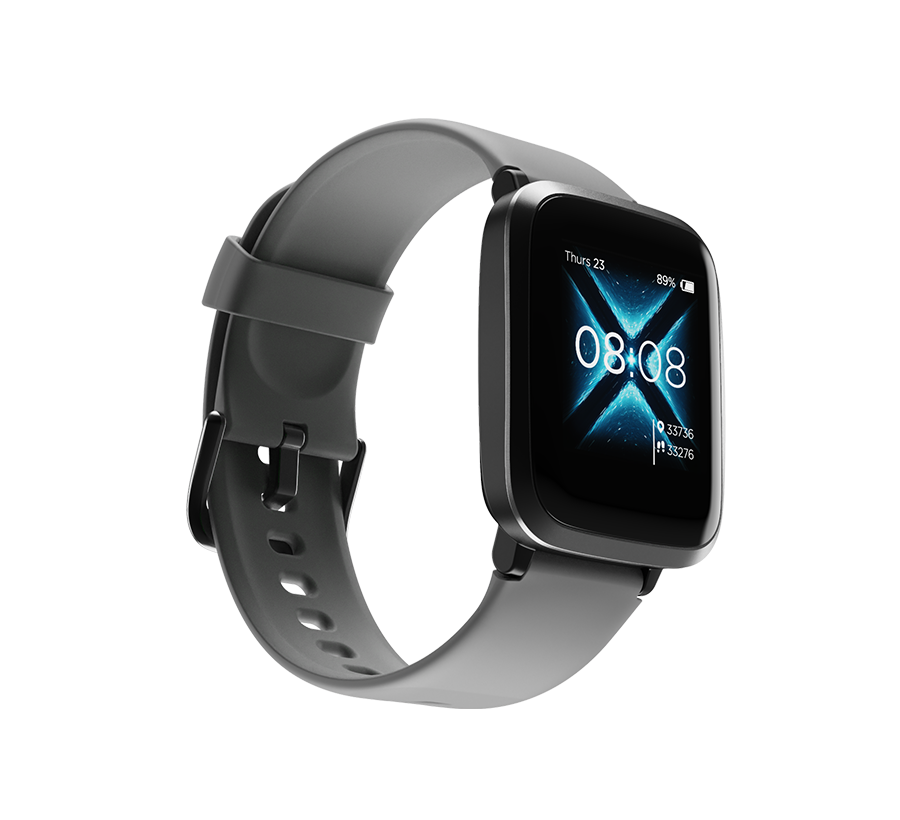

- Test image 
output on microsoft Azure-headphones
output on mobilenet model-bluetooth headphones
Result-
mobile net is more accurate
Test image
output on microsoft Azure-shoes
output on mobilenet model-running shoes
Result-
mobile net is more accurate
Test imageoutput on microsoft Azure-mouse
output on mobilenet model-pc mouse
Result-
microsoft Azure is more accurate
Test image output on microsoft Azure-watch
output on mobilenet model-smart watch
Result-
microsoft Azure is more accurate
Test image